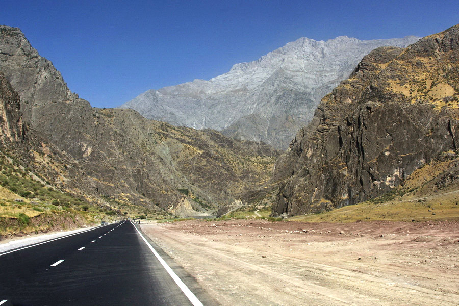

Памирский дом
Чид — традиционный дом, где архитектура связана с семейными и духовными традициями. Пять опорных столбов и потолок чорхона — его узнаваемые черты.
Посмотреть дом ↗ПАМИР / ГОРЫ / ВАША ИСТОРИЯ
Дальше от привычного. По дорогам Памира —
к древним крепостям, горным долинам
и встречам, которые остаются с вами.
Ваханская долина, Гарм-Чашма и дорога на Калай-Хумб
Горный маршрут через Калай-Хумб
Горячие источники в ГБАО
Историческая крепость в Ваханской долине
Добавьте прогулку по саду в свой маршрут по Хорогу
ВАШ ПАМИР · ТОЧКА ЗА ТОЧКОЙ
Выберите место в списке или нажмите на точку.
Приближайте карту, чтобы увидеть соседние места.
10 мест для вашего маршрута
Точки обозначают места и районы, а не готовый автомобильный маршрут.
ЛЮДИ · ВКУСЫ · ТРАДИЦИИ
Культура, которую хочется узнать ближе.
Чид — традиционный дом, где архитектура связана с семейными и духовными традициями. Пять опорных столбов и потолок чорхона — его узнаваемые черты.
Посмотреть дом ↗Вышитые тюбетейки, яркие ткани и орнаменты рассказывают о местных традициях. Познакомьтесь с праздничными нарядами жителей Памира.
Смотреть видео ↗Ширчой — горячий чай с молоком, солью и сливочным маслом. Откройте рецепты и узнайте, как приготовить его дома.
Найти рецепты на YouTube ↗Струнный рубаб и ритмы дафа сопровождают песни и музыкальные традиции региона. Послушайте звучание памирских инструментов.
Найти музыку на YouTube ↗ОТДОХНУТЬ И ПРОДОЛЖИТЬ ПУТЬ
Выберите точку на маршруте.
Найдите жильё и свяжитесь с хозяевами напрямую.
Показано вариантов: 3
Для остановки в Хороге
Семейный гостевой дом: вариант для знакомства с городом перед продолжением маршрута.
Для маршрута по Вахану
В Лангаре можно остановиться в семейном доме. Выберите вариант на карте и свяжитесь с хозяевами.
Для остановки на Памирском тракте
Посмотрите варианты размещения и контакты на сайте отеля, затем уточните условия на ваши даты.
Цены и наличие мест уточняйте у хозяев на ваши даты. Ссылки открываются в новой вкладке.
Памирский тракт, Ваханская долина и высокогорные ландшафты. Перед поездкой проверьте сезон, состояние дорог и местные требования.
Национальный парк Таджикистана в списке ЮНЕСКОВаханская долина и Ямчун
Гарм-Чашма
Памирский тракт
Калай-Хумб
Хорог и окрестности
Дорога на Памир

НЕ ПРОСТО ПОЕЗДКА
Выберите то, что откликается вам. Начните с одного — и соберите свою историю.
Дорога, где каждый поворот — новый пейзаж.
Остаться на вечер вдали от городских огней.
Поселения, горные реки и широкие панорамы.
Добавить тёплую остановку в горный маршрут.
Зайти в памирский дом и познакомиться с ширчоем.
Истории о горах, долинах и культуре Памира
Для большинства горных маршрутов удобнее планировать поездку на тёплый сезон. Погода и доступность дорог зависят от высоты и конкретного региона, поэтому проверяйте условия перед выездом.
Для дальних горных маршрутов местный гид поможет спланировать путь и учесть дорожные условия. Перед поездкой уточните актуальные требования для выбранного района.
Возьмите удобную обувь, тёплую одежду слоями, воду и защиту от солнца. В горах погода может быстро меняться.
Выберите маршрут по Памирскому тракту, загляните в Ваханскую долину и познакомьтесь с горными селениями.
Уточняйте погоду, состояние дорог и правила посещения перед поездкой.